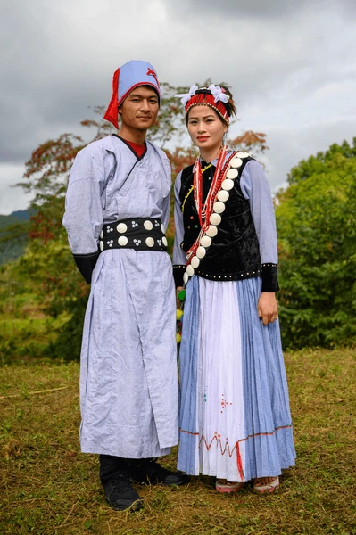
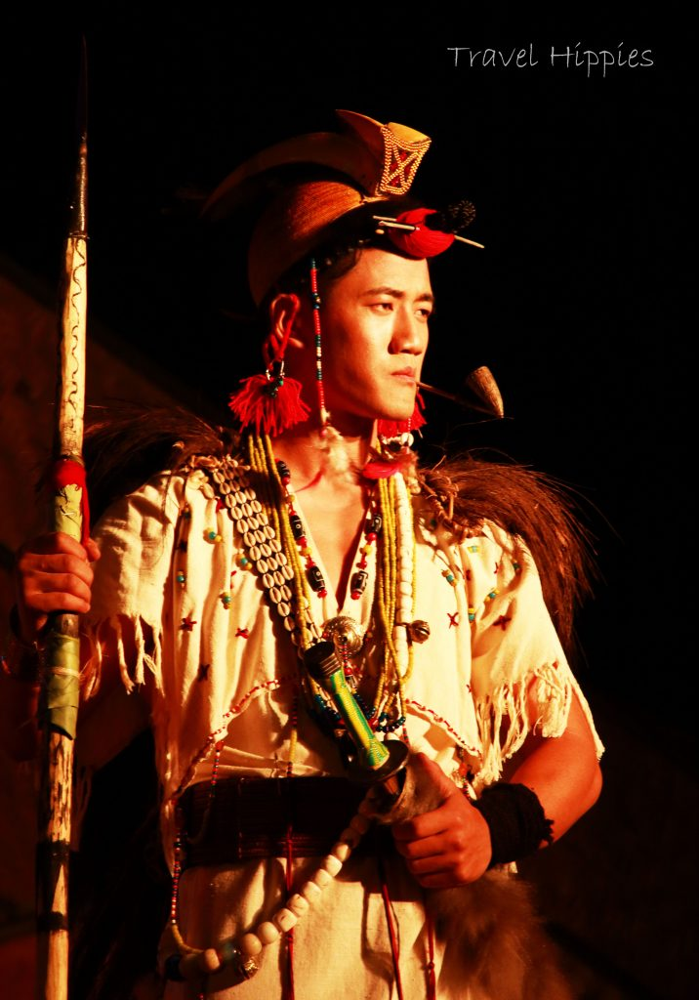

The traditional dress of Arunachal Pradesh reflects the rich cultural diversity and tribal heritage of the state. Each tribe has its own distinctive clothing style, often characterized by vibrant colors, intricate designs, and materials sourced from nature. These traditional attires are not only functional, suited to the region's climate and terrain, but also hold cultural and symbolic significance, representing the identity and status of the wearer.
Nyishi Tribe:
The Nyishi tribe, one of the largest in Arunachal Pradesh, is known for its unique traditional attire. Nyishi men wear a sleeveless coat made from cane, along with a loincloth. A prominent feature of their dress is the traditional headgear, which is adorned with the beak of a hornbill, symbolizing bravery and status. This headgear, known as Bopiah, is often worn during important ceremonies and festivals. Women of the Nyishi tribe wear a wrap-around skirt called a Musha, paired with a blouse, and accessorize with heavy beads and ornaments made of silver and brass.
Apatani Tribe:
The Apatani tribe, residing in the Ziro Valley, is known for its distinctive facial tattoos and traditional attire. Apatani women wear a dark, full-length skirt known as Jilang, along with a matching upper garment. Both men and women wear a special type of shawl called Galuk, which is worn diagonally across the shoulder. The Apatani women often accessorize their outfit with large nose plugs made of cane, though this tradition has become less common in recent years.


Monpa Tribe:
The Monpa tribe, largely influenced by Tibetan culture, has its own unique clothing style. Monpa men typically wear woolen coats called Shuba, which protect them from the cold climate of their high-altitude region. Monpa women wear a full-length sleeveless gown called Shingka, over which they drape a jacket. Both men and women wear colorful woolen scarves, caps, and boots to complete their outfit, reflecting the region's close proximity to Tibet.
Adi Tribe:
The Adi tribe, residing in the Siang Valley, wears colorful handwoven clothes. Adi men wear a short sleeveless coat with a loincloth, while the women don intricately designed wrap-around skirts called Gale. Adi women also wear beaded necklaces and silver ornaments, often during festivals and cultural events.
Other Tribes:
Other tribes like the Galo, Mishmi, and Wancho also have their own traditional attire, each reflecting their tribal identity and cultural heritage. The use of bright colors, handwoven patterns, and natural materials like bamboo and cane is a common feature across most tribes in Arunachal Pradesh.
In conclusion, the traditional dress of Arunachal Pradesh is a vivid expression of the state's tribal diversity and artistic heritage. These outfits are not just garments but symbols of the tribes' history, social status, and connection to nature.